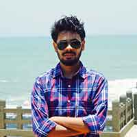

|  |
Sayandeep Asim Khamrai
Design Engineer |
Mumbai, India
Email Me |
About Me
I am an aspiring Interaction Designer. I have completed my Graduation in Mechanical Engineer and have experience as a Design Engineer for 2 year.
Professional experience
| December, 2018 – May, 2019 |
Graduate Engineering Trainee at Balkrishna Industries,Mumbai |
- Supports the Tire mold making Operation process
- To provide managerial support to production managers on daily
department operations, such as 5S, output and continuous improvement, etc
- Manage various work teams (Subcontractors, suppliers, management, and
unionized employees) to develop solutions for improving the existing and future
equipment
- Provide input to plan, manage and perform product introduction to higher
management
|
Education
| 2014 – 2018 |
Bachelor of Engineering, Mechanical Engineering
Lokmanya Tilak College of Engineering, University of Mumbai, India |
- Minors in CAD/CAM/CAE, Machine Design, Engineering Mechanics, Production
Process, Strength of Material, Supply chain management and Business process
reengineering
- Cumulative GPA 7.49/10
- ISHRAE and MESA society Member
- Project - Designed and fabricated a “Automatics Sewage Disposal System” for
waste management
|
Courses
CATIA V5
CADD Centre, Mumbai, India - STUDENT ID: M190548687
- Part Modeling ,Sketch Creation and Editing
- Assembly Modeling Surface Modeling
- Sheet metal design
CAD and Digital Manufacturing
Coursera Online – Autodesk
Develop digital manufacturing skills in sketching and modeling, sculpting and rendering,
animation and simulation.
Capstone Project : “First Person View Drone” designed in Autodesk 360 by
considering real environmental constraints.
Personal Skill
Languages Known
English, Hindi, Marathi, Bengali
German A2 Qualified (Goethe-Zertifikat A2) - Basic user
IELTS – 7 Overall (Listening – 7.5; Reading – 8; Writing – 6; Speaking – 6) - CEFR
Level C1
Communication and managerial skills
- Good communication and team management skill gained through my experience as a
student and an industrial trainee
- Good ability to think critically and creatively for research
- Strong Work Ethics, Good Time management abilities
- Effective Problem-Solving abilities and ability to learn and accept from Criticism
Digital skills
- Proficient in using CREO, CATIA, Pro-E, AUTODESK FUSION 360 for solid modeling,
simulation and problem- solving
- Proficient in using Microsoft office
- Photoshop CC user for Graphical Designing